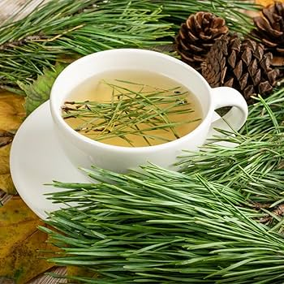

Lumber Soup

We've all wanted to eat a tree at some point in our lives. So why not try with this vegan low-fat gluten-free soup? This soup has a sweet smoky taste from the western red ceder, and a wintery taste from the pine needles which additionally serve to add texture.
This recipe was invented by my Latvian great-grandmother when she was nine, while visiting her father who worked at a lumber mill in British Columbia, there was an accident and everyone else evacuated and assumed she was dead, so she was trapped in the lumbermill, at first she lived off the lunches the workers had left behind, but once those ran out she had to get creative. What ensued was this soup, by eating it, she managed to survive for the 11 years and 7 months she was stuck in the mill. Once she escaped, she didn't know English, so she lived in the forest and lived off this soup again.
Eventually she was found by my future great-grandfather, who had learned Latvian 5 years earlier on a dare. He taught my great-grandmother English, and together they founded a restaurant called "The Soup Forest". Customers of the restaurant include Willian Lyon Mackenzie King, Winston Churchill, and a young Pierre Trudeau. When my great-grandmother was making the restaurant version of the dish, she tried all the woods in every combination and settled on this one, the restaurant sadly closed in 1976, when my great-grandmother died of a heart condition. Her recipe however lives on in this article.
Ingredients (for 4)
- 5 Pinecones
- 3 Cups Pine Needles
- 1½ in 3 piece of western red ceder
- 4 in 2 Spruce Bark
Instructions
- Boil water at medium heat.
- While you are waiting for the water to boil, grind the spruce bark.
- Once the water has boiled add pinecones, ceder, and bark to water and let it simmer. Wait 10 minutes.
- Strain soup. Add soup back to pot.
- Add pine needles to the soup, if you are feeling spicy, you can re-add the bark removed in the previous steps.
- Leave it to cool for 5 minutes and enjoy!